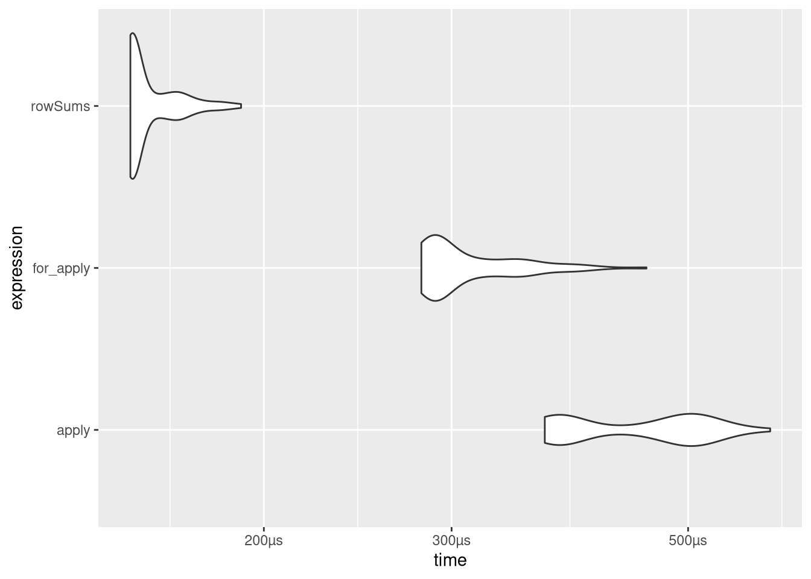

Simulations- und Programmierübungen in R
Im Folgenden werden keine neuen Konzepte eingeführt, zum Üben der bisher eingeführten Konzepte werden aber eine Reihe von Aufgaben gestellt, die Schritt für Schritt mit statistischen Beispielen zu ersten eigenen und zunehmend komplexen Simulationen führen sollen. Zu jeder Aufgabe wird auch eine Musterlösung angeboten, wie immer ist diese aber zum Einen nicht die einzig mögliche Lösung und zum Anderen bitte erst zu konsultieren, wenn eine eigene Lösung versucht wurde. Der Lernfortschritt durch eigenes Programmieren (und Fehler machen) ist wesentlich größer als durch das einfache Lesen fertiger Skripte.
Pascalsches Dreieck
Das Ziel soll sein, eine Funktion namens binom_mat zu erstellen, die für eine gegebene Zahl n das Pascalsche Dreieck bis zur gegebenen Größe zurückgibt.
Dieses Dreieck soll erstmal als Matrix zurückgegeben werden, die für die Zahl 5 zum Beispiel so aussehen könnte:
## [,1] [,2] [,3] [,4] [,5]
## [1,] 1 0 0 0 0
## [2,] 1 1 0 0 0
## [3,] 1 2 1 0 0
## [4,] 1 3 3 1 0
## [5,] 1 4 6 4 1Die erste Spalte der Matrix soll also die “obere linke Flanke” des Dreiecks repräsentieren.
Antwort
binom_mat <- function(z){ # (1)
mat <- matrix(0,z,z) # (2)
for(i in seq(z)){ # (3)
mat[i,1] <- 1
}
for(i in seq(2,z)){ # (4)
for(j in seq(2,i)){ # (5)
mat[i,j] <- mat[i-1,j-1] + mat[i-1,j] # (6)
}
}
return(mat) # (7)
}Erläuterungen:
Die Matrix soll am Ende z Zeilen haben. Allerdings werden die Zeilen und Spalten einer Matrix beginnend mit 1 durchnummeriert, so dass die Zeilennummer nicht das n der Binomialkoeffizienten ist. Vielmehr stehen die Bionomialkoeffizienten \(n \choose k\) am Ende in der Zeile mit der Nummer n+1 und der Spalte mit der Nummer k+1.
Hier wird eine Matrix erzeugt, die den Namen mat bekommt. Die Matrix wird zunächst mit Nullen gefüllt. Sie soll z Zeilen und z Spalten haben.
Die linke Spalte der Matrix wird mit Einsen gefüllt. Hier ist zu bemerken, dass die Elemente einer Matrix mit Zeilen- und Spaltennummer in eckigen Klammern angesprochen werden.
Hier folgen verschachtelte Schleifen. In der äußeren Schleife werden die Zeilen der Matrix angesprochen, die der Reihe nach mit den richtigen Zahlen gefüllt werden sollen. Die erste Zeile der Matrix hat schon die Endgestalt, daher beginnt die Schleife mit i=2.
Hier kommt die innere Schleife; die Zeile mit der Nummer i ist erreicht, die vorherigen Zeilen sind schon richtig aufgefüllt worden. Die Elemente in dieser Zeile ergeben sich dadurch, dass man die Zahlen links darüber und direkt darüber addiert. Die erste Zahl 1 der Zeile wurde vorher schon eingefüllt, daher fängt die Schleife mit j=2 an; außerdem sind die Zahlen am Ende alle 0 (sofern sie außerhalb des Dreiecks liegen), daher geht die Schleife nur bis j=i (i ist an dieser Stelle eine feste Zahl).
Hier werden – wie gerade beschrieben – die Zahlen der i-ten Zeile eingefügt.
Die Matrix ist jetzt fertig ausgefüllt und wird an dieser Stelle zurückgegeben.
Für manche Anwendungen wollen wir vielleicht eine Liste, keine Matrix als Output haben.
Schreibe deswegen eine Funktion binom_list, die eine Liste von Vektoren zurückgibt.
Verpacke dann beide Funktionen in eine binom_pascal-Funktion, in der mit einem optionalen Argument das Output-Format für das Pascalsche Dreieck angibt.
Antwort
binom_list <- function(z) {
out <- list()
for (i in seq_len(z)) {
out[[i]] <- 1
for (j in seq_len(i - 1) + 1) {
out[[i]][j] <-
out[[i - 1]][j - 1] + ifelse(is.na(out[[i - 1]][j]),
0,
out[[i - 1]][j])
}
}
return(out)
}
binom_list(5)## [[1]]
## [1] 1
##
## [[2]]
## [1] 1 1
##
## [[3]]
## [1] 1 2 1
##
## [[4]]
## [1] 1 3 3 1
##
## [[5]]
## [1] 1 4 6 4 1binom_pascal <- function(z, format = 'm'){
if(format != 'm'){
return(binom_list(z))
}
return(binom_mat(z))
}Erweitere deine Listenfunktion so, dass die zurückgegebene Liste die Klasse pascal hat und die Anzahl der Zeilen des Dreiecks im n-Attribut abgelegt wird.
Schreibe nun eine Erweiterung des print-Befehls, indem du eine Funktion print.pascal definierst, die die Argumente x und den ...-Operator erwartet.
Mit diesem Namen legst Du fest, dass die pascal-Klasse mit genau dieser Funktion geprintet werden soll, sobald also ein Objekt diese Klasse hat, wird diese Printfunktion aufgerufen.
Der Output soll dabei so aussehen:
## 1
## 1 1
## 1 2 1
## 1 3 3 1
## 1 4 6 4 1Antwort
binom_list <- function(z) {
out <- list()
for (i in seq_len(z)) {
out[[i]] <- 1
for (j in seq_len(i - 1) + 1) {
out[[i]][j] <-
out[[i - 1]][j - 1] + ifelse(is.na(out[[i - 1]][j]),
0,
out[[i - 1]][j])
}
}
attributes(out)$class <- 'pascal'
attributes(out)$n <- z
return(out)
}
## für einfache Zahlen können wir die print-Funktion so schreiben:
print.pascal <- function(x,...){
n <- attributes(x)[['n']]
for(i in seq_len(n)){
cat(rep(' ', n-i), sep = '')
cat(x[[i]])
cat('\n')
}
}
## funktioniert:
binom_list(5)## 1
## 1 1
## 1 2 1
## 1 3 3 1
## 1 4 6 4 1## geht bei mehr digits aber kaputt:
binom_list(7)## 1
## 1 1
## 1 2 1
## 1 3 3 1
## 1 4 6 4 1
## 1 5 10 10 5 1
## 1 6 15 20 15 6 1## mit einer Verallgemeinerung der eingefügten Leerzeichen klappt das aber auch:
print.pascal <- function(x,...){
n <- attr(x, 'n')
nsp <- nchar(as.character(max(x[[n]]))) # guck wie viele Stellen die längste Zahl hat
for(i in seq_len(n)){
dummy <- str_pad(as.character(x[[i]]), # ergänze die Zahl als character auf die größte Länge
side = 'left',
width = nsp)
cat(rep(' ', nsp * (n-i)), sep = '')
cat(dummy, sep = paste0(rep(' ', nsp), collapse = ''))
cat('\n')
}
}
binom_list(10)## 1
## 1 1
## 1 2 1
## 1 3 3 1
## 1 4 6 4 1
## 1 5 10 10 5 1
## 1 6 15 20 15 6 1
## 1 7 21 35 35 21 7 1
## 1 8 28 56 70 56 28 8 1
## 1 9 36 84 126 126 84 36 9 1Als letztes wollen wir die Funktion nur noch praktisch nutzen.
Dafür müssen wir noch eine Funktion binom_coeff schreiben, die für gegebenes n und k den Wert des Binominialkoeffizienten ausgibt.
Überlege Dir dazu, ob Du lieber binom_mat oder binom_list benutzen möchtest.
Mit choose(n,k) kannst Du überprüfen, ob die in R angelegte Funktion für den Binomialkoeffizienten auf dieselbe Lösung kommt.
Antwort
binom_coeff <- function(n,k){
if(n==0){ # (1)
if(k==0){return(1)} else{return(0)}
}
mat <- binom_pascal(n+1) # (2)
return(mat[n+1,k+1]) # (3)
}
binom_coeff(10,2)## [1] 45choose(10,2)## [1] 45Anmerkungen:
n = 0 muss abgefangen werden.
Wenn n nicht 0 ist, wird die Matrix erzeugt, die ausreichend groß ist, also n+1 Zeilen hat.
Der gesuchte Koeffizient steht dann in der Zeile n+1 und der Spalte k+1, da ja die Nummerierung der Zeilen und Spalten einer Matrix mit 1 beginnt und nicht mit 0.
Aus Spaß können wir auch mal die beiden Implementationen vergleichen.
Dazu bauen wir eine fast identische Funktion, die mit den Listen arbeitet und geben beide in bench::mark:
binom_coeff_l <- function(n,k){
if(n==0){
if(k==0){return(1)} else{return(0)}
}
mat <- binom_pascal(n+1, 'l')
return(mat[[n+1]][k+1])
}
library(bench)
n <- 30
k <- 5
bench::mark(iterations = 100,
list = binom_coeff_l(n,k),
mat = binom_coeff(n,k)) %>%
autoplot(type = 'violin')Die Matritzen-Variante ist wesentlich schneller, probieren wir noch einmal wie sich das für verschieden große Matritzen verhält:
sim <- bench::press(
n = 100 * 1:5,
bench::mark(iterations = 100,
list = binom_coeff_l(n,k),
mat = binom_coeff(n,k))
)
pmap_dfr(list(sim$time,
names(sim$expression),
sim$n),
~tibble(times = as.numeric(..1),
iterator = ..2,
reps = 100 * ..3)) %>%
ggplot(aes(x = reps,
y = times,
color = iterator)) +
geom_point(alpha = .1) +
stat_summary(geom='line',
fun = median) +
labs(y = 'Zeit [s]',
x = 'Iterierte Werte') +
scale_color_brewer(palette = 'Dark2') +
geom_smooth(method = 'lm',
formula = y ~ poly(x, 2)) +
theme_minimal()
ggsave('imgs/list_mat_pascal.png',
scale = 2)Matrizen und \(\chi^2\)
Beispiele für Matrizen sind Kontingenztafeln. Hier spielen die Randsummen eine wichtige Rolle, die apply-Funktion bietet die oben schon erwähnte Möglichkeit, solche Randsummen besonders einfach zu bilden:
m <- matrix(c(1,2,3,4), ncol = 2)
m## [,1] [,2]
## [1,] 1 3
## [2,] 2 4apply(m, MARGIN = 1, FUN = sum)## [1] 4 6Die Argumente FUN und MARGIN müssen hier angegeben werden. Im Beispiel sollen Summen gebildet werden (FUN = sum), wobei ein Index festgehalten wird, hier Zeilenindex (MARGIN = 1). Der andere Index (hier dann der Spaltenindex) ist der Index, über den summiert wird. Sind die Einträge der Matix \(x_{ij}\), so werden also die Summen \(\sum_j x_{ij}\) gebildet, die Randsummen am rechten Rand.
Dasselbe mit MARGIN = 2 liefert die Summen der Einträge in den jeweiligen Spalten, also die Randsummen am unteren Rand, ausprobieren!
An der Stelle von sum können auch andere Funktionen eingesetzt werden, beispielsweise prod, wenn nicht Summen, sondern Produkte gebildet werden sollen (ausprobieren!).
Alternativ sind in R mit colSums und rowSums Funktionen zur Bildung von Spalten- und Zeilensummen schon implementiert, außerdem könnten wir auch eine for-Schleife nutzen, um die Summen zu berechnen.
Überlege zuerst, wie man Eine Funktion schreiben könnte, die mit denselben Argumenten wie apply mit Hilfe einer for-Schleife Zeilen- oder Spaltenweise Werte aggregiert.
Antwort
my_apply <- function(m,MARGIN,FUN, ...){
if(MARGIN == 2){
m <- t(m)
}
out <- numeric(nrow(m))
for (i in seq_len(nrow(m))) {
out[i] <- FUN(m[i,], ...)
}
return(out)
}
my_apply(m, 2, sum)## [1] 3 7apply(m, 2, sum)## [1] 3 7Nutze jetzt deine for-apply-Alternative, apply und rowSums um mit bench::mark zu testen, welche dieser Funktionen am besten in 100 Tests auf Basis einer 100x100-Matrix performed.
Antwort
library(bench)
m <- matrix(1:10000, ncol = 100)
bmark <- mark(
iterations = 100,
for_apply = my_apply(m, 1, sum),
apply = apply(m, 1, sum),
rowSums = rowSums(m)
)
bmark %>%
autoplot(type = 'violin')
Eine dieser Funktionen können wir nun benutzen, um den chi-Quadrat-Wert einer Kontingenztafel zu bestimmen.
Schreibe dazu eine Funktion, die für eine Matrix x einen chi-Quadrat-Wert nach der Formel \[\chi^2=\sum_{i,j}\frac{(f_{o,ij}-f_{e,ij})^2}{f_{e,ij}} = \sum_{i,j}\frac{\left(n_{ij}- \frac{n_{i\cdot} n_{\cdot j}}{n}\right)^2}{\frac{n_{i\cdot} n_{\cdot j}}{n}}\] berechnet.
Für diese Funktion gibt es zwei Möglichkeiten zur Implementation. Zum Einen können geschachtelte for-Schleifen verwendet werden, zur anderen kann die sweep-Funktion benutzt werden.
sweep() kann benutzt werden um eine Matrix zeilen-oder spaltenweise mit einem Vektor zu transformieren. Dabei kann ein arithmetsicher Operator (+,-,…) genutzt werden um die Werte zu verrechnen. Hier ist ein einfaches Beispiel in dem mit sweep das kleine 1-mal-1 in einer 10x10-Matrix erstellt wird:
m <- matrix(rep(1:10,each = 10), ncol = 10)
m## [,1] [,2] [,3] [,4] [,5] [,6] [,7] [,8] [,9] [,10]
## [1,] 1 2 3 4 5 6 7 8 9 10
## [2,] 1 2 3 4 5 6 7 8 9 10
## [3,] 1 2 3 4 5 6 7 8 9 10
## [4,] 1 2 3 4 5 6 7 8 9 10
## [5,] 1 2 3 4 5 6 7 8 9 10
## [6,] 1 2 3 4 5 6 7 8 9 10
## [7,] 1 2 3 4 5 6 7 8 9 10
## [8,] 1 2 3 4 5 6 7 8 9 10
## [9,] 1 2 3 4 5 6 7 8 9 10
## [10,] 1 2 3 4 5 6 7 8 9 10sweep(m, # Matrix
MARGIN = 1, # zeilenweise, also pro Zeile ein anderer Wert des Vektors
STATS = 1:10, # der Vektor mit dem multipliziert werden soll
FUN = '*') # Angabe dass multipliziert werden soll## [,1] [,2] [,3] [,4] [,5] [,6] [,7] [,8] [,9] [,10]
## [1,] 1 2 3 4 5 6 7 8 9 10
## [2,] 2 4 6 8 10 12 14 16 18 20
## [3,] 3 6 9 12 15 18 21 24 27 30
## [4,] 4 8 12 16 20 24 28 32 36 40
## [5,] 5 10 15 20 25 30 35 40 45 50
## [6,] 6 12 18 24 30 36 42 48 54 60
## [7,] 7 14 21 28 35 42 49 56 63 70
## [8,] 8 16 24 32 40 48 56 64 72 80
## [9,] 9 18 27 36 45 54 63 72 81 90
## [10,] 10 20 30 40 50 60 70 80 90 100Suche Dir einen der beiden Wege aus und setze diesen um.
Mit der chisq.test-Funktion könnt Ihr überprüfen, ob die bestehende Implementation auf dieselbe Lösung kommt.
Antwort
for_chisq <- function(m){ # (1)
I <- dim(m)[1] # (2)
J <- dim(m)[2]
n <- sum(m) # (3)
e <- matrix(rep(0,I*J),nrow = I) # (4)
nip <- rowSums(m) # (5)
npj <- colSums(m)
for(i in seq(I)){ # (6)
for(j in seq(J)){
e[i,j] <- nip[i] * npj[j]/n
}
}
e1 <- matrix(rep(0,I*J),nrow = I) # (7)
for(i in seq(I)){
for(j in seq(J)){
e1[i,j] <- (m[i,j]-e[i,j])^2/e[i,j] # (8)
}
}
return(sum(e1)) # (9)
}Anmerkungen:
Die Matrix x ist die zu untersuchende Kontingenztafel mit absoluten Häufigkeiten. Zur Berechnung wird die Formel Folie 165 QM1 benutzt.
Die Zeilenzahl I der Matrix wird bestimmt (zur Erinnerung: R unterscheidet zwischen Groß- und Kleinbuchstaben), nächste Zeile: Spaltenzahl J.
Die Gesamtzahl n aller Beobachtungen.
In der Matrix e sollen nachher die erwarteten Häufigkeiten stehen, hier wird die Matrix angelegt und mit Nullen gefüllt.
Vektor der rechten Randsummen (\(n_{i.}\)), nächste Zeile untere Randsummen (\(n_{.j}\)).
Die Matrix e wird mit den erwarteten Häufigkeiten gefüllt.
In der Matrix e1 sollen nachher die Summanden für den chi-Quadrat-Koeffizienten stehen, hier wird sie mit Nullen gefüllt angelegt.
Die Matrix e1 wird mit den Summanden gefüllt.
Der chi-Quadrat-Koeffizient ist jetzt die Summe der Zahlen in der Matrix e1.
mat_chisq <- function(m) {
e <- matrix(rep(colSums(m),
each = nrow(m)),
nrow = nrow(m))
e <- sweep(e,
rowSums(m),
MARGIN = 1,
FUN = '*')
e <- e / sum(m)
return(sum((m - e) ^ 2 / e))
}| Zeile | Was passiert? |
|---|---|
| 1 | |
| 2 | Matrix wird aufgefüllt mit Spaltensummen (wir erinnern uns dass Matrizen in R spaltenweise aufgefüllt werden) |
| 3 | und zwar wird jede Spaltensumme pro Spalte in jede Zeile geschrieben |
| 4 | und die Matrix soll dieselben Maße wie m haben. |
| 5 | |
| 6 | Wir nehmen die Matrix der Spaltensummen |
| 7 | und die Zeilensummen |
| 8 | gehen zeilenweise vor (jede Zeile eine Zeilensumme) |
| 9 | und multiplizieren die ni. und n.j in jeder Zelle. |
| 10 | Dann müssen wir die Zellen nur noch durch die Gesamtzahl der Beobachtungen teilen und haben die eij. |
| 11 | Als letztes quadrieren wir die Abweichungen der Matirx von den eij, teilen die Ergebnisse durch die eij und summieren alles auf. |
| 12 |
Kleine Zusatzaufgabe falls Interesse besteht: Benchmarke die zwei Implementationen (gerne die aus der Musterlösung, Du musst nicht noch selber die andere umsetzen7) und die folgende Variante gegeneinander:
unname(chisq.test(m)$statistic)## Warning in chisq.test(m): Chi-squared approximation may be incorrect## [1] 0Antwort
m <- matrix(1:10000, ncol = 100)
bmark <- bench::mark(
iterations = 1000,
forX2 = for_chisq(m),
matX2 = mat_chisq(m),
RX2 = unname(chisq.test(m)$statistic)
)
bmark %>%
autoplot(type = 'violin')Als letztes baue einen chi-Quadrat-Test auf Unabhängigkeit mit der \(\chi^2\)-Statistik aus unseren Funktionen durchführt und die Originalmatrix mit Randsummen, die Gesamtzahl an Beobachtungen, die Teststatistik, die Freiheitsgrade und das p8 zurückgibt.
Antwort
my_chisq.test <- function(m){
out <- list(statistic = mat_chisq(m))
mat <- rbind(m, colSums(m))
mat <- cbind(mat, rowSums(mat))
out$mat <- mat
out$n <- mat[nrow(mat), ncol(mat)]
out$df <- (nrow(m)-1) * (ncol(m) - 1)
out$p <- pchisq(out$statistic,
df = out$df,
lower.tail = F)
return(out)
}
m <- matrix(1:9,ncol = 3)
my_chisq.test(m)## $statistic
## [1] 0.46875
##
## $mat
## [,1] [,2] [,3] [,4]
## [1,] 1 4 7 12
## [2,] 2 5 8 15
## [3,] 3 6 9 18
## [4,] 6 15 24 45
##
## $n
## [1] 45
##
## $df
## [1] 4
##
## $p
## [1] 0.976471chisq.test(m)## Warning in chisq.test(m): Chi-squared approximation may be incorrect##
## Pearson's Chi-squared test
##
## data: m
## X-squared = 0.46875, df = 4, p-value = 0.9765Als kleinen Zusatz könnt Ihr Euch noch überlegen, wie Ihr eine eigene print-Funktion für Euren Test schreiben könntet.
Antwort
my_chisq.test <- function(m){
out <- list(statistic = mat_chisq(m))
mat <- rbind(m, colSums(m))
mat <- cbind(mat, rowSums(mat))
out$mat <- mat
out$n <- mat[nrow(mat), ncol(mat)]
out$df <- (nrow(m)-1) * (ncol(m) - 1)
out$p <- pchisq(out$statistic,
df = out$df,
lower.tail = F)
attributes(out)$class <- 'my_chisqtest'
return(out)
}
print.my_chisqtest <- function(x, ...){
cat('Chi-Quadrat-Test auf Unabhängigkeit')
cat('\n')
cat('Chi^2_(',x$df,') = ',x$statistic,'; p = ',x$p, sep = '')
cat('\n\n')
cat('Der Test ist damit auf 5%-Niveau',
ifelse(x$p<.05,' ',' nicht '),
'signifikant!', sep = '')
}
m <- matrix(1:9,ncol = 3)
my_chisq.test(m)## Chi-Quadrat-Test auf Unabhängigkeit
## Chi^2_(4) = 0.46875; p = 0.976471
##
## Der Test ist damit auf 5%-Niveau nicht signifikant!chisq.test(m)## Warning in chisq.test(m): Chi-squared approximation may be incorrect##
## Pearson's Chi-squared test
##
## data: m
## X-squared = 0.46875, df = 4, p-value = 0.9765